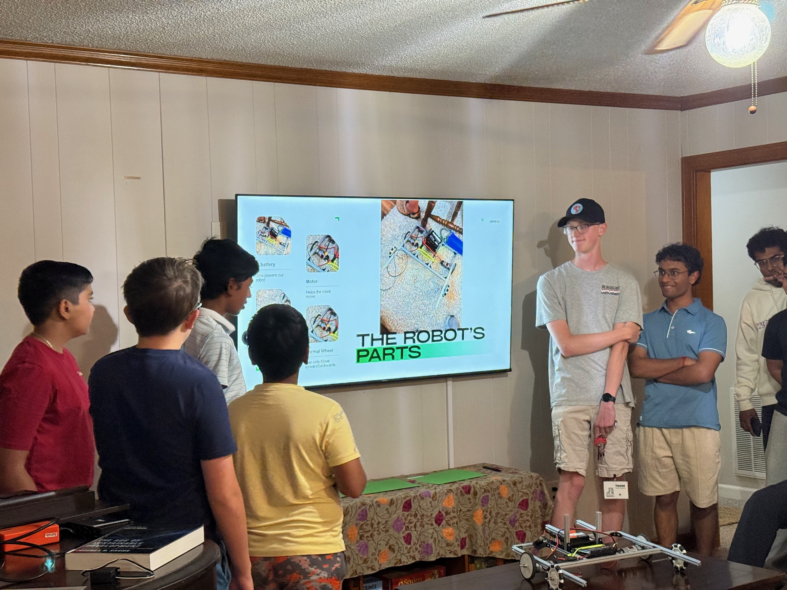

My outreach work has ranged from week-long engineering camps to
planetarium shows, robotics competitions, peer tutoring, and the
creation of new student teams.

I try to structure technical instruction around a short explanation,
a clear demonstration, and enough time for students to build and test
something themselves.
01
Teaching approach
The goal is not simply to show students that engineering is
impressive. It is to give them enough confidence to realize that they
can participate in it.
My lessons generally begin with a concise explanation and physical
demonstration. Students then spend most of the session implementing,
testing, and revising the concept themselves. This keeps technical
material approachable without removing the challenge that makes it
interesting.
02
Camps & structured instruction
Summer 2025
Club SciKidz
STEM Day Camp Counselor
Led project-based programs for students ages 7–13, including
Junior Scientist, Junior AI and Chatbot, and Advanced Robotics
with LEGO SPIKE. I combined demonstrations with supervised
building while maintaining a safe, engaging environment.
2024–2026
SPARK! Robotics
Robotics Subject Captain
Developed and presented four lessons introducing middle-school
students across South Carolina to robotics, electronics, and
circuitry. I also helped coordinate material for a 15-student
instructional team.
Summer 2026
FTC Team 22972 Excalibur
Middle-School Robotics Camp
Helped organize and teach a week-long introduction to FTC
robotics. Lessons used short explanations, live demonstrations,
hands-on implementation, and small science activities to keep
students engaged.
Camp proceeds supported the creation of a new FTC team through
Fort Mill 4-H.
2026
Scouting America
Digital Technology Instruction
Organized technical merit-badge instruction covering digital
systems, electronic safety, logic, computing, and responsible
technology use. Group instruction was paired with individual
assignments for requirements better completed independently.
03
Robotics mentorship
2026–Present
Fort Mill 4-H
Founder & Mentor, FTC Team 37033
Helped establish a new FIRST Tech Challenge team and guide its
students through robot design, CAD, fabrication, programming,
documentation, and competition preparation.
2022–2026
Gold Hill Middle School
Robotics Competition Support
Served as a VIQRC Tournament Manager operator and certified Head
Referee, entering match information, applying competition rules,
and helping events run consistently for student teams.
2024–2026
GSSM student teams
CAD & Fabrication Training
Trained younger FTC and SeaPerch team members in CAD,
3D printing, mechanical design, fabrication, and iterative
prototyping.
04
Museums & public science
2023–2026
Museum of York County
Junior Interpreter & Planetarium Operator
Answered visitor questions, hosted space-themed activities,
supported hands-on natural-science exhibits, operated the
planetarium projector, and assisted with live shows.
2024–2026
Sullenberger Aviation Museum
Makerspace Assistant
Helped visitors, field-trip groups, and homeschool students use
makerspace equipment and materials while exploring
engineering-focused activities.
2024–2026
IAAC
Astronomy & Astrophysics Ambassador
Hosted astronomy activities at museums and introduced
participants to the scientific concepts used in international
competition questions.
05
Tutoring & peer education
2023–2026
Schoolhouse.world
SAT Math Tutor
Led targeted group and one-on-one tutoring sessions, used
assessment results to plan instruction, and helped facilitate
full-length practice tests serving more than 200 students.
2025–2026
GSSM Tutoring Labs
French Tutor
Helped peers work through course concepts and assignments by
adapting explanations to the specific areas where they were
struggling.